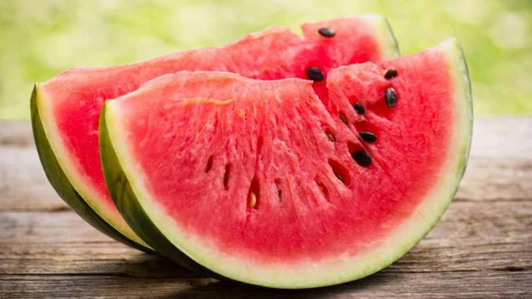
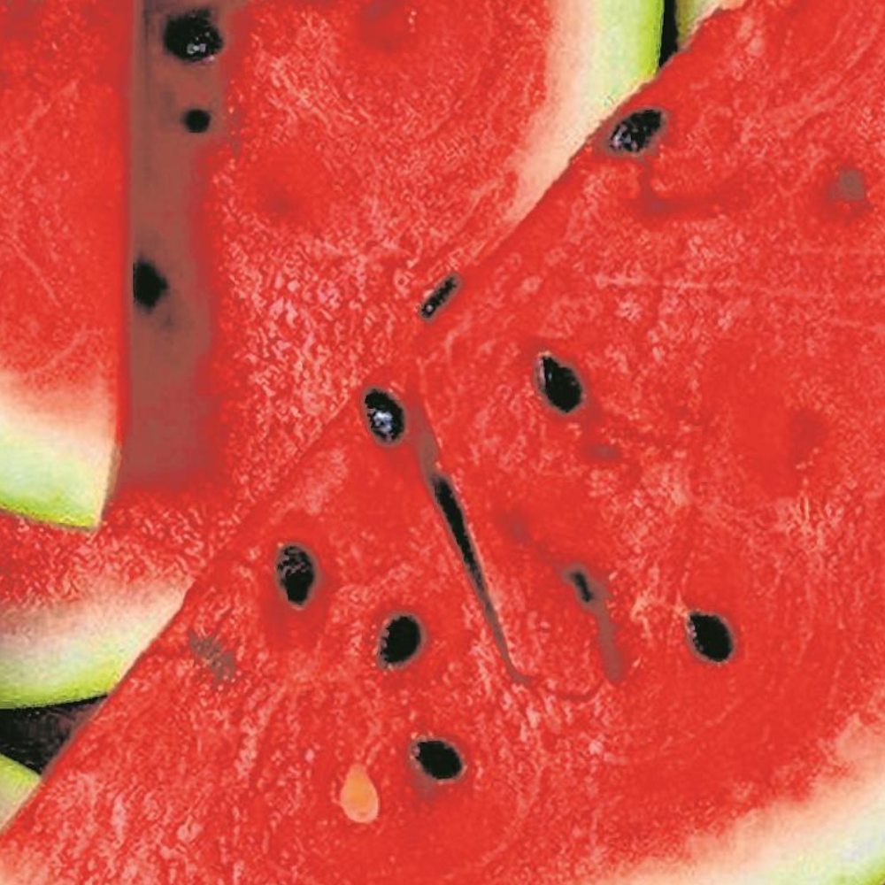
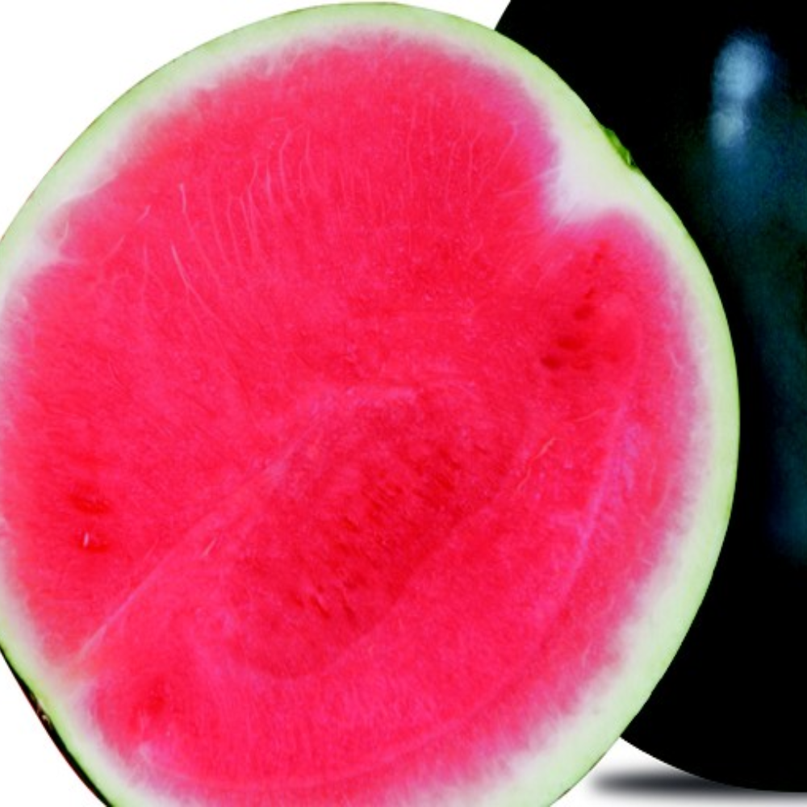
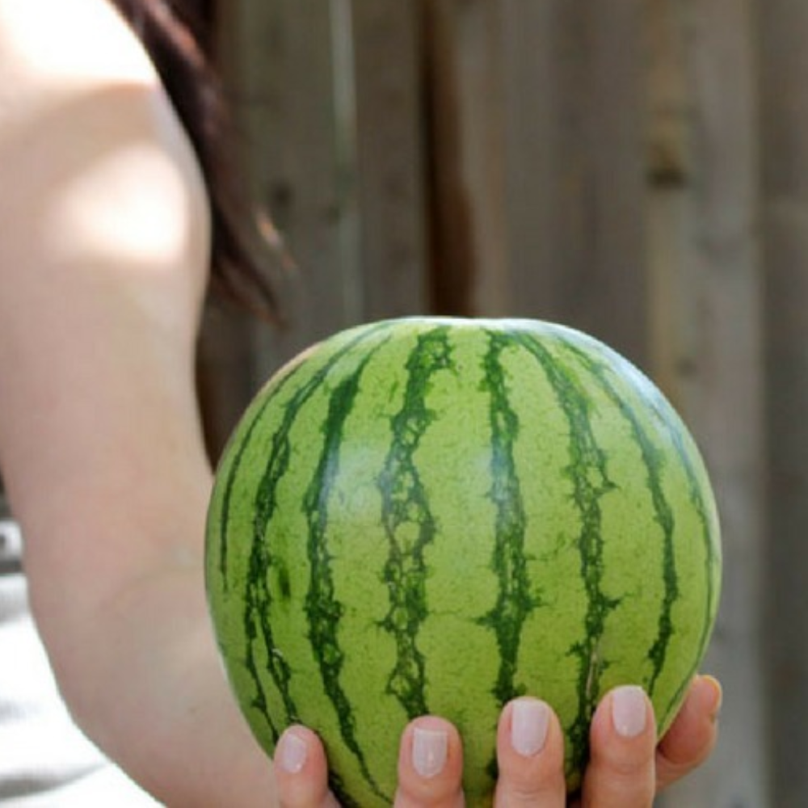
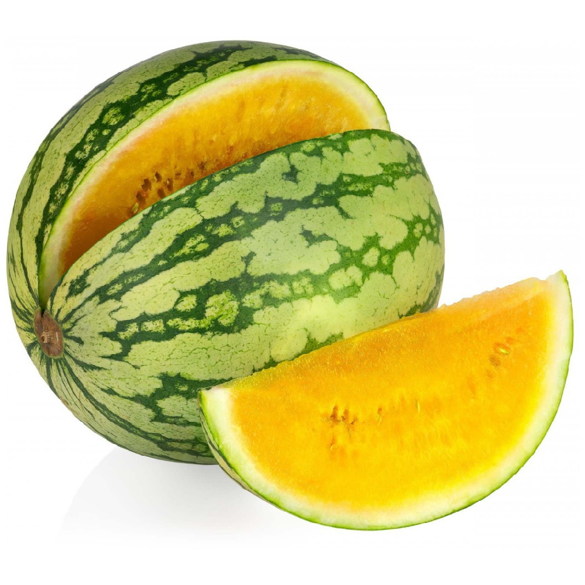
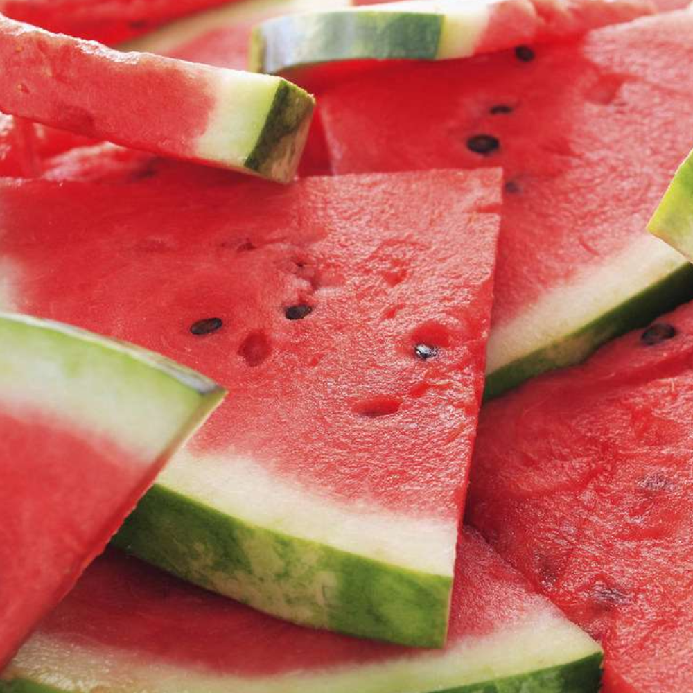

A melancia é uma fruta rasteira, originária da África, presume-se que ela veio do deserto de Kalahari. O primeiro registro de colheita de melancia se deu há cerca de cinco mil anos, no Egito, como descrevem hieróglifos encontrados nas paredes de suas construções remotas. No antigo Egito, melancias eram colocadas nos túmulos dos faraós para alimentá-los na "vida" após a morte.
Pertence a mesma família do pepino, da abóbora e do melão.
Existem 5 tipos de melancia, sendo eles:
Com semente |
Sem sementes |
Melancia Baby |
Melancia Amarela |
Melancia Vermelha |
|  |  |  |  |  |
| Nutriente | Quantidade |
| Vitamina A | 50 mcg |
| Vitamina B1 | 20 mcg |
| Vitamina B2 | 10 mcg |
| Vitamina B3 | 100 mcg |
| Valor energético | 26 Kcal |
| Fibras | 0,1 g |
| Licopeno | 4,5 mcg |
| Ácido fólico | 2 mcg |
| Zinco | 0,1 mg |
| Carboidratos | 5,5 g |
| Proteína | 0,4 g |
| Cálcio | 10 mg |
| Fósforo | 5 mg |
| Magnésio | 12 mg |
| Vitamina C | 4 mg |
| Caroteno | 300 mcg |
| Potássio | 100 mg |
| Ferro | 0,3 mg |
A melancia pode ser consumida diariamente, e até várias vezes por dia, só devemos evitar o consumo na parte da noite após as refeições, pois ela pode ser indigestiva. Essa deliciosa fruta pode ser consumida de várias formas, seja comendo a própria fruta, fazendo suco, ou fazendo várias outras receitas que podem ser conferidas na área RECEITAS .